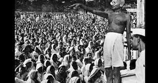
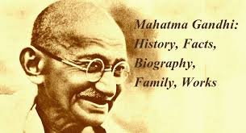
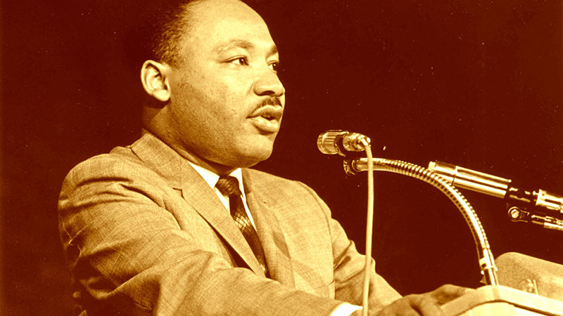

“The ultimate measure of a man is not where he stands in moments of comfort and convenience, but where he stands at times of challenge and controversy.
|
|
“The ultimate measure of a man is not where he stands in moments of comfort and convenience, but where he stands at times of challenge and controversy. |
|
Champions of Human Rights Dr. Martin Luther King Jr. (1929–1968) |
:
  |
|

Martin Luther King, Jr. was one of the twentieth century’s best-known advocates for nonviolent social change.
Born in Atlanta, Georgia, King’s exceptional oratorical skills and personal courage first attracted national attention in 1955,
when he and other civil rights activists were arrested after leading a boycott of a Montgomery, Alabama, transportation company
which required nonwhites to surrender their seats to whites, and stand or sit at the back of the bus. Over the following decade,
King wrote, spoke and organized nonviolent protests and mass demonstrations to draw attention to racial discrimination and to demand
civil rights legislation to protect the rights of African-Americans.
In 1963 in Birmingham, Alabama, King guided peaceful mass demonstrations that the white police force countered with police dogs and
fire hoses, creating a controversy which generated newspaper headlines throughout the world. Subsequent mass demonstrations in many
communities culminated in a march that attracted more than 250,000 protestors to Washington, DC, where King delivered his famous
'I have a dream” speech in which he envisioned a world where people were no longer divided by race.
So powerful was the movement he inspired, that Congress enacted the Civil Rights Act in 1964, the same year King himself was
honored with the Nobel Peace Prize. Posthumously awarded the Presidential Medal of Freedom, King is an icon of the civil rights movement. His
life and work symbolize the quest for equality and nondiscrimination that lies at the heart of the American—and human—dream.
|
Home / Privacy Policy / Terms of Service / Feedback
By Bhoopendra Yadav
CBSE© / All Rights Reserved